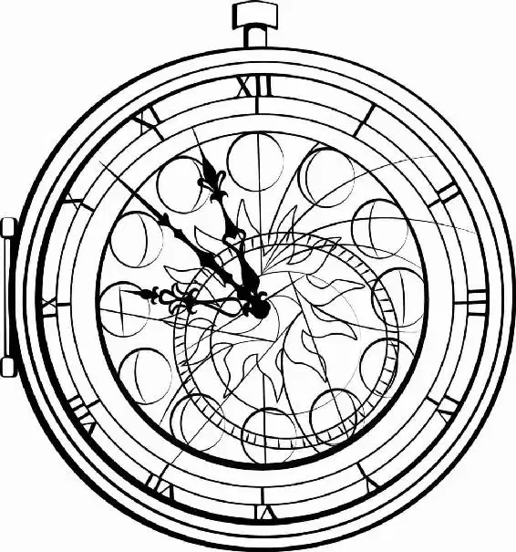

The Red Queen’s castle was eerily silent as Alice and Hatter crept down the stairs and into the main hall. Not even the leaves on the walls rustled.
“Where is everyone?” Alice whispered.
“Look!” Hatter pointed through a doorway to the garden, where what looked like an impromptu courtroom had been set up.
In the center of the grass, Mirana stood tall and dignif ied, with a determined McTwisp at her side. Bordering the courtyard was a line of vegetable soldiers, including several who guarded the Tweedles, Thackery, Bayard, and Mallymkun. Before them all, on a raised platform, Iracebeth gleefully bounced on her toes in front of a throne of branches. Time was chained to a smaller, less decorated throne set next to Iracebeth’s. His face was haggard and he was clutching his heart. In her typical self-involved way, Iracebeth appeared oblivious to the fact that she was killing Time.
“We’re too late,” Alice said, taking in Time’s condition.
“He’s almost out of himself. We must hurry.”
Hatter took her hand and squeezed it. They couldn’t give up yet.
“Mirana of Marmoreal!” Iracebeth declared loudly, glaring down at her sister. “You are accused of treason. I hereby sentence you to—”
“Wait!” McTwisp objected. “What about the verdict?”
“Sentence f irst! Then verdict,” Iracebeth bellowed. Her gaze snapped back to Mirana. “You are banished to the Outlands,” Iracebeth continued. Her voice was now almost hushed, and it trembled slightly. “No one is to show you kindness or ever speak a word to you. You will not have a friend in the world.”
Mirana faced her sister, her eyes wide.
Taking a deep breath, Iracebeth lifted her chin def iantly. “You have lied. You have stolen. You are not the rightful queen of Underland,” she said.
The White Rabbit bounded forward. “Objection! Where’s your proof?”
“I don’t need proof,” Iracebeth spat. “I’ve got better. I shall have a confession!” She lifted the Chronosphere, its metal bands glinting brightly.
Puzzled, Mirana drew her eyebrows together as Iracebeth descended toward her. The Red Queen threw the Chronosphere to the ground and it immediately expanded to its traveling-through-time size. As the bands spun and whirred, the lights along its edges glowed white. A jolt ran through Alice as she realized Iracebeth’s plan.
“Wait!” Alice burst from hiding. “Stop! Wait!”
Everyone turned to stare at her as she rushed across the courtyard.
“You cannot change the past, Your Majesty,” Alice cried. “Believe me, I have tried.”
Narrowing her eyes, Iracebeth huffed angrily! Before anyone could stop her, she latched on to her sister’s arm and tugged her past the whizzing bands into the heart of the Chronosphere.
Iracebeth expertly steered the Chronosphere into the sky. Alice stared upward, watching the golden ball wink against the clouds before it disappeared completely.
Frantic, Alice spun to face the crowd. “We’ve got to stop her!” she cried.
Clambering up on the stage, Alice and Hatter rushed to Time. The rust had spread across his body and he was slumped to the side.
“You’ve got to take us back,” Alice told Time as she and Hatter untied him. “She’s going to change the past!”
Time gazed blankly at Alice and then at the grass, where Zanik and the rest of the Hightopps were laying out the pieces of the Tempus Fugit. His eyes clouded over, his face weary.
“C’mon, old chap,” Hatter said. “Don’t give yourself a hard time.”
But Time just shook his head slowly. “I’m too weak,” he wheezed.
“No, you’re not.” Alice poked his shoulder.
“You’re Time. The Inf inite ...”
“The Immortal!” Hatter cried.
“I’m beginning to wonder about that last part,” Time muttered.
“And besides,” Hatter continued, ignoring him, “you’re the only person who can rebuild that thing.” He pointed to the array of cogs, chains, wooden levers, and beams that were spread out like a jigsaw puzzle before them.
As Time’s eyes f inally focused on the pieces, a spark lit deep within him. It was his nature to march onward! After casting a quick smile at Hatter and Alice, he shuff led toward the parts. It was about time he got to work.
Just a few ticks later—longer, admittedly, than it had taken the f irst time—the Tempus Fugit was ready. Time gave it one f inal inspection, then nodded to Alice and Hatter.
The three of them climbed aboard and began pumping the levers to launch it skyward. The Ocean of Time f lickered below, various moments bubbling to the surface.
Time gazed below, and he saw something troubling. Every day was tinged with a smattering of reddish brown. Noticing his somber expression, Alice took a second look and her conf idence sank.
The rust was spreading. They didn’t have much time.
